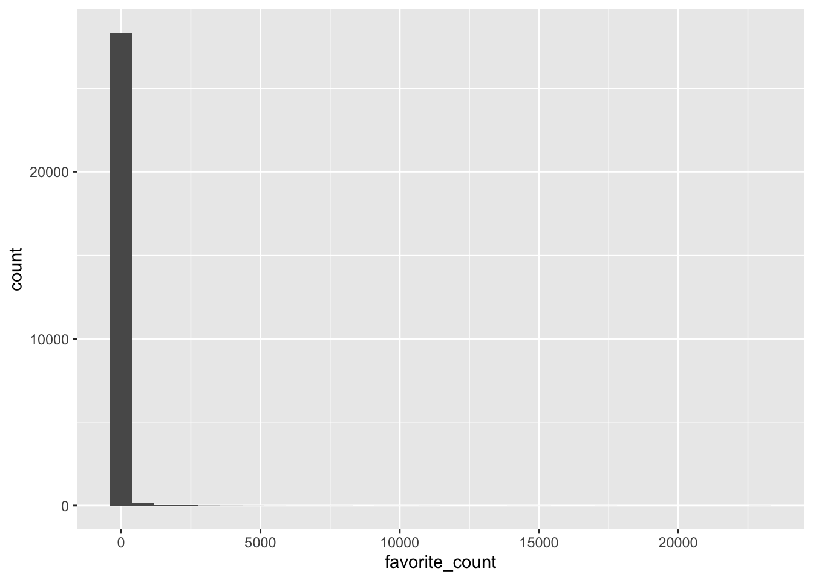

`stat_bin()` using `bins = 30`. Pick better value with `binwidth`.

library(dplyr)filtered_data <- tweets %>%filter()
The summarise() function from the dplyr package is loaded as part of the tidyverse and creates summary statistics. It creates a new table with columns that summarise the data from a larger table using summary functions.
The $ operator: The dollar sign allows you to select items from an object, such as columns from a table. The left-hand side is the object, and the right-hand side is the item. When you call a column like this, R will print all the observations in that column.
tweet_summary$mean_favs
[1] 29.71732
tweets$source[1] # select one observation
[1] "Twitter for Android"
tweets$display_text_width[c(20,30,40)] # select multiple with c()
[1] 78 287 107
Pipes allow you to send the output from one function straight into another function. Specifically, they send the result of the function before %>% to be the first argument of the function after %>%. It can be useful to translate the pipe as “and then”.
tweet_summary <- tweets %>%# start with the object tweets and thensummarise(mean_favs =mean(favorite_count), #summarise itmedian_favs =median(favorite_count))
Inline coding To insert those values into the text of a report you can use inline coding. First. we’ll create another set of objects that contain the first and last date of the tweets in our dataset. format() formats the dates to day/month/year.
Rows: 2273 Columns: 10
── Column specification ────────────────────────────────────────────────────────
Delimiter: ","
chr (9): Artwork Title, Artist_Lastname, Artist_FirstName, Medium, Artwork Y...
num (1): Accession
ℹ Use `spec()` to retrieve the full column specification for this data.
ℹ Specify the column types or set `show_col_types = FALSE` to quiet this message.
Warning: Returning more (or less) than 1 row per `summarise()` group was deprecated in
dplyr 1.1.0.
ℹ Please use `reframe()` instead.
ℹ When switching from `summarise()` to `reframe()`, remember that `reframe()`
always returns an ungrouped data frame and adjust accordingly.
NYC_School_Art
# A tibble: 2,273 × 4
Artist_FirstName Artist_Lastname Borough Medium
<chr> <chr> <chr> <chr>
1 COSTANTINO NIVOLA MANHATTAN CONCRETE
2 COSTANTINO NIVOLA MANHATTAN CONCRETE
3 COSTANTINO NIVOLA MANHATTAN CONCRETE
4 OTELLO GUARDUCCI MANHATTAN CAST STONE
5 JOHN MATT MANHATTAN BRONZE
6 JACK HASTINGS MANHATTAN BRONZE
7 WILLIAM TARR 399 STEEL, WEATHERING
8 JOHN TERKEN BRONX METAL PAINTED
9 GWEN LUX MANHATTAN MOSAIC
10 GWEN LUX MANHATTAN GLASS
# … with 2,263 more rows